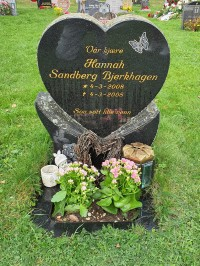

Hannah Sandberg Bjerkhagen
K, #48402, f. 4 mars 2008, d. 4 mars 2008
Foreldre
| Far | Steffen Bjerkhagen (f. 12 november 1987) |
| Mor | Christine Sandberg (f. 18 juni 1987) |

Hanna Sandberg Bjerkhagen
Biografi
Hannah Sandberg Bjerkhagen ble født den 4 mars 2008 på/i Regionsykehuset, Trondheim, Sør-Trøndelag. Hun døde den 4 mars 2008 på/i Regionsykehuset, Trondheim, Sør-Trøndelag. Hun ble gravlagt den 12 mars 2008 på/i Ringsaker kirke, Ringsaker, Hedmark.
| Sist redigert |
9 mai 2022 00:00:00 |
| Slektskap | Oldebarn av Håkon Wahl
Oldebarn av Lovise Julie Eggan |
Harry Henry Johanson
M, #48404, f. 27 august 1892, d. 20 august 1988
Biografi
Harry Henry Johanson ble født den 27 august 1892 på/i Richwood, Minnesota, USA. Han giftet seg med
Minnie Elsie Peterson den 23 juni 1932 på/i St Paul, Ramsey County, Minnesota, USA. Han døde den 20 august 1988 på/i Detroit Lakes, Minnesota, USA.
| Sist redigert |
13 mars 2008 00:00:00 |
Ole Peder Olsen Selnes
M, #48405, f. 31 mars 1873
Foreldre
Biografi
Ole Peder Olsen Selnes ble født den 31 mars 1873 på/i Selnes; Snillfjord, Hemne, Sør-Trøndelag.
Ole Peder Olsen Selnes ble døpt den 25 mai 1873 på/i Hemne kirke, Hemne, Sør-Trøndelag.
| Sist redigert |
13 mars 2008 00:00:00 |
| Slektskap | 3-menning 3 ganger forskjøvet til Håkon Wahl |
Anders Olsen Selnes
M, #48406, f. 2 februar 1876
Foreldre
Biografi
Anders Olsen Selnes ble født den 2 februar 1876 på/i Selnes; Snillfjord, Hemne, Sør-Trøndelag.
Anders Olsen Selnes ble døpt den 26 mars 1876 på/i Hemne kirke, Hemne, Sør-Trøndelag.
| Sist redigert |
13 mars 2008 00:00:00 |
| Slektskap | 3-menning 3 ganger forskjøvet til Håkon Wahl |
Anna Oline Olsdatter Hevnskjel
K, #48407, f. 14 februar 1887, d. 29 desember 1940
Foreldre
Biografi
Anna Oline Olsdatter Hevnskjel ble født den 14 februar 1887 på/i Stranda, Hevnskjel; Snillfjord, Hemne, Sør-Trøndelag. Hun giftet seg med
Nils George Hansen Holten i 1902 på/i Red Lake County, Minnesota, USA. Hun døde den 29 desember 1940 på/i University Hospital, Minneapolis, Hennepin County, Minnesota, USA. Hun ble gravlagt på/i Greenwood Cemetery, Thief River Falls, Pennington County, Minnesota, USA.
Anna Oline Olsdatter Hevnskjel was also known as Anna Oline Olsdatter Strand Holten. Hun was also known as Anna Oline Selnes. Hun ble døpt den 30 mai 1887 på/i Hemne kirke, Hemne, Sør-Trøndelag. Hun emigrerte til USA den 15 mars 1893.
| Sist redigert |
27 april 2026 00:01:17 |
| Slektskap | 3-menning 3 ganger forskjøvet til Håkon Wahl |
Nils George Hansen Holten
M, #48408, f. 2 januar 1875, d. 16 mai 1955
Biografi
Nils George Hansen Holten ble født den 2 januar 1875 på/i Stamnes, Sortland, Nordland. Han giftet seg med
Anna Oline Olsdatter Hevnskjel i 1902 på/i Red Lake County, Minnesota, USA. Han døde den 16 mai 1955 på/i Thief River Falls, Minnesota, USA. Han ble gravlagt på/i Greenwood Cemetery, Thief River Falls, Pennington County, Minnesota, USA.
Nils George Hansen Holten was also known as Niels Jorgen Holten. Han immigrerte til USA den 30 april 1884. Han bodde på/i Palmer, Divide County, North Dakota, USA. Han bodde på/i Sauk Valley, Williams County, North Dakota, USA.
| Sist redigert |
27 april 2026 00:11:12 |
Harold Oliver Holten
M, #48409, f. 21 april 1903, d. 25 mars 1986
Foreldre
Biografi
Harold Oliver Holten ble født den 21 april 1903 på/i Plummer, Red Lake County, Minnesota, USA. Han giftet seg med
Agnes Dorothy Nelson i 1928 på/i Stanley, Mountrail County, North Dakota, USA. Han døde den 25 mars 1986 på/i Longview, Cowlitz County, Washington, USA. Han ble gravlagt på/i Longview Memorial Park, Longview, Cowlitz County, Washington, USA.
| Sist redigert |
26 april 2026 23:37:50 |
| Slektskap | 4-menning 2 ganger forskjøvet til Håkon Wahl |
Thorvald Amandeus Holten
M, #48410, f. 15 oktober 1904, d. 29 mars 1992
Foreldre
Biografi
Thorvald Amandeus Holten ble født den 15 oktober 1904 på/i Plummer, Red Lake County, Minnesota, USA. Han giftet seg med
Petra Albertina Norman i 1925. Han døde den 29 mars 1992 på/i Redmond, King County, Washington, USA. Han ble gravlagt på/i Evergreen-Washelli Memorial Park, Seattle, King County, Washington, USA.
Thorvald Amandeus Holten was also known as Thorwald Amandus Holten.
| Sist redigert |
27 april 2026 00:07:43 |
| Slektskap | 4-menning 2 ganger forskjøvet til Håkon Wahl |
Olga Melvine Holten
K, #48411, f. 6 juni 1907, d. 29 januar 1982
Foreldre
Biografi
Olga Melvine Holten ble født den 6 juni 1907 på/i Corinth, North Dakota, USA. Hun giftet seg med
Anton Carl Thompson i 1925. Hun døde den 29 januar 1982 på/i Williston, Williams County, North Dakota, USA. Hun ble gravlagt på/i Hillside Memory Gardens, Williston, Williams County, North Dakota, USA.
Olga Melvine Holten was also known as Olga Nelvine. Hun was also known as Thompson. Hun was also known as Baker.
| Sist redigert |
27 april 2026 00:25:43 |
| Slektskap | 4-menning 2 ganger forskjøvet til Håkon Wahl |
Walter Orvil Holten
M, #48412, f. 12 juli 1909, d. 21 januar 1993
Foreldre
Biografi
Walter Orvil Holten ble født den 12 juli 1909 på/i Wildrose, Williams County, North Dakota, USA. Han døde den 21 januar 1993 på/i Hot Springs, Sanders County, Montana, USA. Han ble gravlagt på/i Murray Memorial Gardens, Hot Springs, Sanders County, Montana, USA.
| Sist redigert |
27 april 2026 10:12:57 |
| Slektskap | 4-menning 2 ganger forskjøvet til Håkon Wahl |
Anna Marie Holten
K, #48414, f. 21 september 1913, d. 5 februar 1970
Foreldre
Biografi
Anna Marie Holten ble født den 21 september 1913 på/i North Dakota, USA. Hun døde den 5 februar 1970. Hun ble gravlagt på/i Greenwood Cemetery, Thief River Falls, Pennington County, Minnesota, USA.
Anna Marie Holten was also known as Morstad.
| Sist redigert |
27 april 2026 10:14:54 |
| Slektskap | 4-menning 2 ganger forskjøvet til Håkon Wahl |
Ethel Tonille Holten
K, #48415, f. 25 mars 1916, d. 28 januar 1999
Foreldre
Biografi
Ethel Tonille Holten ble født den 25 mars 1916 på/i Wildrose, Williams County, North Dakota, USA. Hun døde den 28 januar 1999 på/i Thief River Falls, Pennington County, Minnesota, USA. Hun ble gravlagt på/i Greenwood Cemetery, Thief River Falls, Pennington County, Minnesota, USA.
Ethel Tonille Holten was also known as Aase.
| Sist redigert |
27 april 2026 10:18:04 |
| Slektskap | 4-menning 2 ganger forskjøvet til Håkon Wahl |
Elen Andersdatter Strand
K, #48416, f. 28 februar 1847
Foreldre
Biografi
Elen Andersdatter Strand ble født den 28 februar 1847 på/i Ness, Hemne, Sør-Trøndelag. Hun giftet seg med
Knud Tøllevsen Bakken den 2 oktober 1878 på/i Hemne kirke, Hemne, Sør-Trøndelag.
Elen Andersdatter Strand ble døpt den 11 juli 1847 på/i Hemne kirke, Hemne, Sør-Trøndelag.
| Sist redigert |
13 mars 2008 00:00:00 |
| Slektskap | Søskenbarn 4 ganger forskjøvet til Håkon Wahl |
Knud Tøllevsen Bakken
M, #48417, f. 1848
Biografi
Knud Tøllevsen Bakken ble født i 1848 på/i Nord-Aurdal, Oppland. Han giftet seg med
Elen Andersdatter Strand den 2 oktober 1878 på/i Hemne kirke, Hemne, Sør-Trøndelag.
| Sist redigert |
15 april 2009 00:00:00 |
Anna Knudsdatter Selnes
K, #48418, f. 12 mars 1877
Foreldre
Biografi
Anna Knudsdatter Selnes ble født den 12 mars 1877 på/i Selnesleiret; Snillfjord, Hemne, Sør-Trøndelag.
Anna Knudsdatter Selnes ble døpt den 29 april 1877 på/i Hemne kirke, Hemne, Sør-Trøndelag.
| Sist redigert |
13 mars 2008 00:00:00 |
| Slektskap | 3-menning 3 ganger forskjøvet til Håkon Wahl |
Karen Regina Andersdatter Strand
K, #48419, f. 28 desember 1850
Foreldre
Biografi
Karen Regina Andersdatter Strand ble født den 28 desember 1850 på/i Vorpbukt, Hevnskjel; Snillfjord, Hemne, Sør-Trøndelag.
Karen Regina Andersdatter Strand ble døpt den 6 juli 1851 på/i Hemne kirke, Hemne, Sør-Trøndelag.
| Sist redigert |
13 mars 2008 00:00:00 |
| Slektskap | Søskenbarn 4 ganger forskjøvet til Håkon Wahl |
Ragnhild Johannesdatter Vorpbukt
K, #48420, f. 15 november 1810
Foreldre
Biografi
Ragnhild Johannesdatter Vorpbukt ble født den 15 november 1810 på/i Vorpbukt, Hevnskjel; Snillfjord, Hemne, Sør-Trøndelag.
| Sist redigert |
13 mars 2008 00:00:00 |
| Slektskap | Søster av 2.tippoldefar/mor til Håkon Wahl |
Johanna Johannesdatter Vorpbukt
K, #48421, f. 25 oktober 1812
Foreldre
Biografi
Johanna Johannesdatter Vorpbukt ble født den 25 oktober 1812 på/i Vorpbukt, Hevnskjel; Snillfjord, Hemne, Sør-Trøndelag.
| Sist redigert |
13 mars 2008 00:00:00 |
| Slektskap | Søster av 2.tippoldefar/mor til Håkon Wahl |
Gunild Johannesdatter Vorpbukt
K, #48422, f. 24 august 1814, d. 1814
Foreldre
Biografi
Gunild Johannesdatter Vorpbukt ble født den 24 august 1814 på/i Vorpbukt, Hevnskjel; Snillfjord, Hemne, Sør-Trøndelag. Hun døde i 1814 på/i Vorpbukt, Hevnskjel; Snillfjord, Hemne, Sør-Trøndelag.
| Sist redigert |
11 februar 2020 00:00:00 |
| Slektskap | Søster av 2.tippoldefar/mor til Håkon Wahl |
Lars Johannessen Vorpbukt
M, #48423, f. 14 desember 1815, d. 16 juli 1897
Foreldre
Biografi
Lars Johannessen Vorpbukt ble født den 14 desember 1815 på/i Vorpbukt, Hevnskjel; Snillfjord, Hemne, Sør-Trøndelag. Han giftet seg med
Jonetta Larsdatter Skogøy. Han giftet seg med
Nellenea Olsdatter Hamnebukt den 27 desember 1849 på/i Hemne kirke, Hemne, Sør-Trøndelag. Han døde den 16 juli 1897 på/i Hevnskjel; Snillfjord, Hemne, Sør-Trøndelag. Han ble gravlagt den 22 juli 1897 på/i Rottem kirkegård, Snillfjord, Hemne, Sør-Trøndelag.
| Sist redigert |
14 mars 2008 00:00:00 |
| Slektskap | Bror av 2.tippoldefar/mor til Håkon Wahl |
{kind=link}